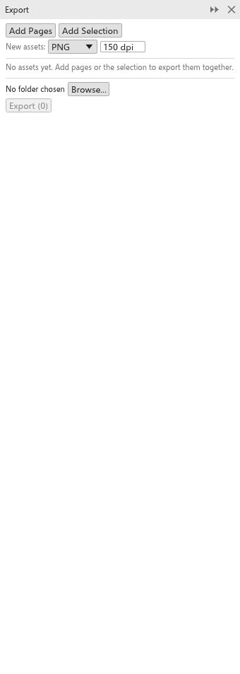

لم تُترجم هذه الصفحة بعد وتُعرض بالإنجليزية.
The Export panel
The Export panel keeps a list of assets (pages and objects) and exports them all at once, each in its own format, to one folder: the icons of an app in several sizes, every page of a set of social media posts. Open it from Window > Panels.

Adding assets
- Add pages adds every page of the drawing, named after the page.
- Add selection adds the selected objects as one asset, cropped to them, named after the object.
- New assets take the format and resolution set under New assets (PNG at 150 dpi at first).
Each asset has a tick (only ticked assets are exported), its name (the file name), its format, its resolution for bitmap formats (72 to 2400 dpi) and a cross to remove it. The link under the name goes to the page or selects the objects.
Exporting
- Click Browse to choose the folder (the first export asks for one).
- Click Export. The button shows how many assets will be written.
Characters that files cannot have in their name become _, and two assets with the same name get " (2)", " (3)" and so on. The status bar says how many files were written. In the browser, every file is downloaded.